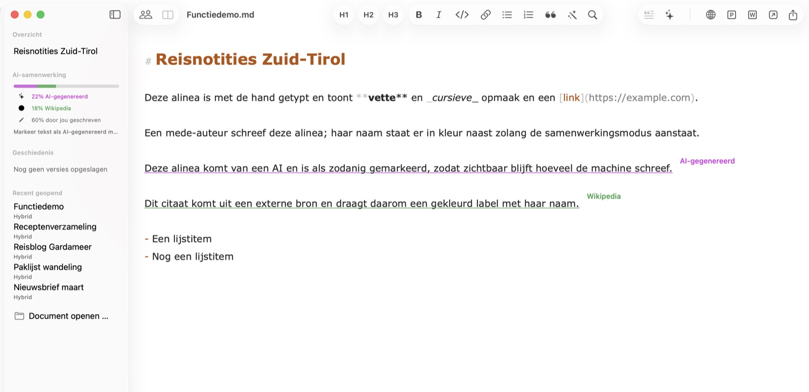
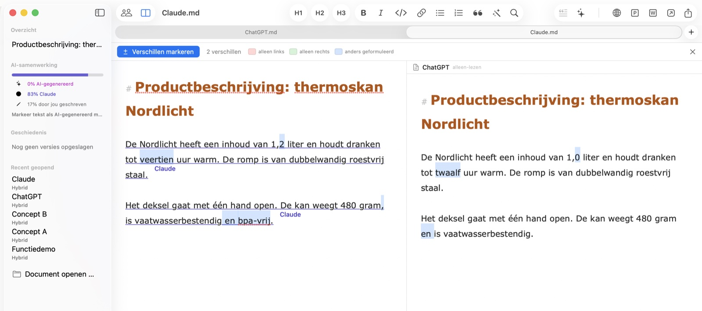
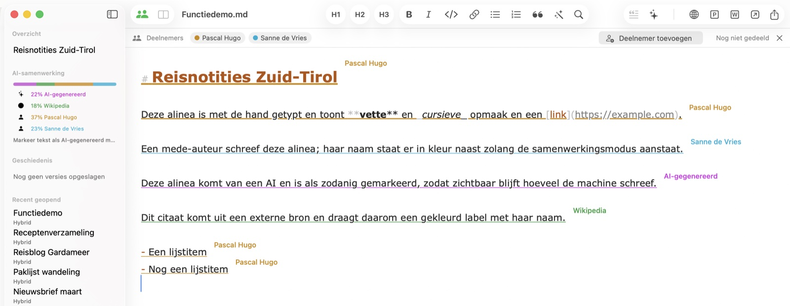
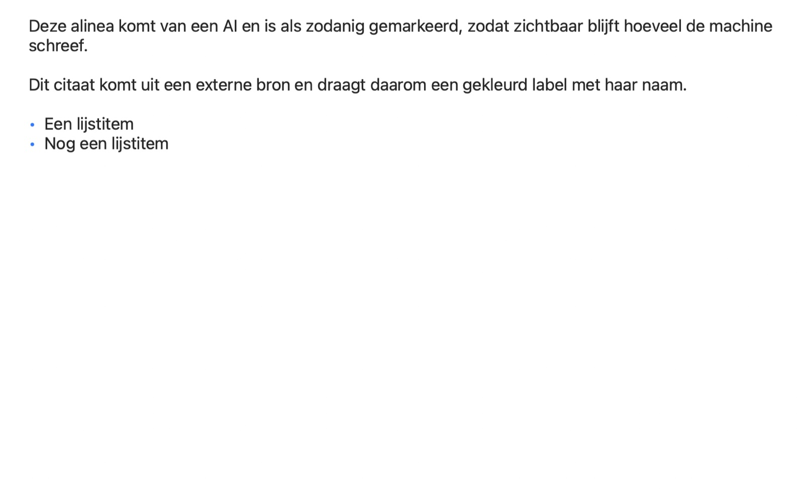

Online publiceren met één klik
Kopieert je document als opgemaakte HTML met ingesloten afbeeldingen — klaar om te plakken in WordPress en andere CMS'en. Afbeeldingen staan precies op hun plek, geen kapotte links.
Hybrid voor macOS
Hybrid houdt bij waar elke passage vandaan komt: zelf geschreven, gegenereerd door een AI, geciteerd uit een benoemde bron of bijgedragen door een collega. Gemaakt voor mensen die publiceren — in PR, marketing, bureaus en redacties.
Probeer 7 dagen gratis
Binnenkort Hybrid komt binnenkort ook naar iPhone en iPad.

Elke passage draagt haar herkomst — en behoudt die bij het bewaren, delen en samen bewerken. Het register reist mee in een gewoon .md-bestand dat elke andere editor kan openen; de labels zweven boven de tekst en belanden in geen enkele export.
Deze alinea heb je zelf getypt — alles wat je schrijft telt automatisch als het jouwe.
Deze passage komt van een AI en is gemarkeerd, zodat het aandeel van de machine zichtbaar blijft.AI-gegenereerd
Dit citaat komt uit een externe bron en draagt haar naam als klein label.Wikipedia
De centrale belofte: wat iemand heeft bijgedragen, blijft aan die persoon toegeschreven — ook als de toegang later wordt ingetrokken. Herkomst is een register van wie schreef, niet van wie nu mag.
Dezelfde vraag ging naar twee AI-tools, en de antwoorden lijken op het eerste gezicht gelijk. Hybrid markeert precies waar ze verschillen en telt de verschillen. Geef elk antwoord de naam van zijn tool als bron: ook na het samenvoegen weet je nog welke zin waarvandaan kwam.

Nodig deelnemers uit per link, uit Contacten, via Mail of Berichten — het document blijft daarbij uitsluitend in jouw iCloud. Genodigden schrijven live mee: elke passage draagt naam en kleur van de auteur, en terwijl iemand typt verschijnt zijn naam met pulserende puntjes. Genodigden kunnen het document niet exporteren of als eigen bestand bewaren — het blijft van de eigenaar.

Koppen, lijsten, echte tabellen en ingesloten afbeeldingen, weergegeven zoals je lezers ze zien. Het voorbeeld volgt je typen live — in een eigen venster of als gedeelde weergave naast de editor; ideaal om een tekst te controleren voordat die het CMS ingaat.

Kopieert je document als opgemaakte HTML met ingesloten afbeeldingen — klaar om te plakken in WordPress en andere CMS'en. Afbeeldingen staan precies op hun plek, geen kapotte links.
Stuur je tekst met één klik naar ChatGPT, Claude, Perplexity of een app naar keuze. Markeer AI-passages en lees het aandeel van elke deelnemer af in de zijbalk.
Markdown is voor mensen én AI-tools even makkelijk te bewerken — het perfecte formaat voor de samenwerking tussen mens en machine. Documenten zijn pure .md-bestanden die elke editor kan openen; alles wat Hybrid extra weet, reist mee in één onzichtbare opmerking.
Sleep een foto in de tekst: die wordt verkleind, geconverteerd en als Markdown-verwijzing ingevoegd. Een CSV- of Excel-bestand wordt een opgemaakte tabel.
Hybrid bewaart tussenstanden terwijl je schrijft; elke stand is te bekijken en te herstellen. De geschiedenis leeft in je iCloud, niet in het bestand — doorgegeven documenten bevatten geen oude versies.
Vergrendel de app direct of automatisch na inactiviteit. Vergrendeld is vergrendeld: alle vensters verborgen, exports uitgeschakeld — tot Touch ID weer opent.
Overal waar tekst uit meerdere handen ontstaat — menselijke en machinale — houdt Hybrid de herkomst uit elkaar.
Schrijf persberichten met AI-ondersteuning en houd overzicht welk citaat uit welke bron komt. Wat mens, AI of bron hebben bijgedragen, staat in het document zelf — transparantie als werkwijze, niet als correctie achteraf.
Veel schrijvers, één stem. Zie ieders aandeel, vergelijk concepten naast elkaar en lever schone HTML aan elk CMS — de hele contentworkflow op je Mac.
Scheid je eigen woorden van bronnen en AI-suggesties. Benoemde bronnen blijven aan elke alinea gekoppeld — door revisies, versies en gedeeld redigeren heen.
Bij rapporten die samen met AI ontstaan, draait het om overzicht: wie schreef wat. Hybrid legt vast wie — of wat — elke passage schreef, en de Touch ID-vergrendeling houdt vertrouwelijke concepten gesloten.
Vergelijk modeluitvoer naast elkaar, meet het AI-aandeel van een document en bewaar prompts en resultaten als schoon Markdown — leesbaar in elke tool.
Van Markdown naar CMS met één klik: opgemaakte HTML met afbeeldingen precies waar ze horen. Plus export naar PDF, Word en puur Markdown.
Na installatie is Hybrid 7 dagen gratis en volledig te gebruiken. Daarna ontgrendelt het abonnement Hybrid Pro alle functies — de prijs staat in de Mac App Store.
Alle functies vanaf de eerste start — zonder account en zonder betaalgegevens.
Het abonnement loopt via de App Store en is daar altijd opzegbaar. Zonder abonnement blijft Hybrid een lezer: openen, lezen, zoeken en het voorbeeld blijven gratis.
Wie voor een samenwerking is uitgenodigd, schrijft mee zonder eigen abonnement — alleen de eigenaar van het document heeft er een nodig.
Hybrid komt binnenkort naar iOS. Dezelfde documenten, dezelfde herkomst — voor onderweg. Tot die tijd zijn je bestanden puur Markdown in iCloud Drive, leesbaar op elk apparaat.
Hybrid is beschikbaar in negen talen: Nederlands, Engels, Duits, Frans, Spaans, Italiaans, Portugees, Japans en vereenvoudigd Chinees — en deze site ook.
Hybrid voor Mac — de Markdown-editor voor mensen, AI en alles wat je publiceert.
macOS 13 (Ventura) of nieuwer · Apple Silicon & Intel